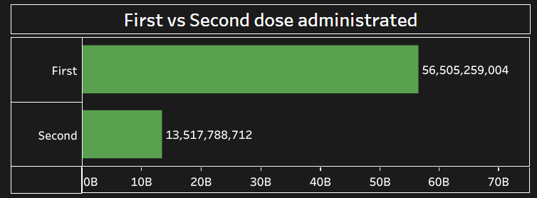

Welcome to our COVID-19 Dashboard Analysis for India! Our dashboard is a powerful tool that providescomprehensive insights into the COVID-19 situation across the country. Here's what you need to know about our analysis:
The purpose of our dashboard is to deliver real-time information and analysis of COVID-19 in India. It serves as a reliable resource for tracking the spread of the virus, understanding its impact, and making informed decisions based on accurate data.
We source our data from reputable and authoritative sources, including government health departments, the World Health Organization (WHO), and renowned research institutes. By utilizing reliable data, we ensure the credibility and accuracy of the information presented on our dashboard. The COVID-19 dataset obtained from Kaggle offers a valuable resource for analyzing and understanding the impact of the pandemic in India. This dataset encompasses a wide range of crucial information related to COVID-19, enabling researchers and analysts to delve into various aspects of the situation. It includes detailed temporal data, allowing for a comprehensive analysis of the virus's spread over time. Moreover, the dataset provides a granular perspective by incorporating geographical information, enabling regional comparisons and assessments. Key variables such as the number of confirmed cases, active cases, recoveries, and deaths offer insights into the overall impact of the virus. Additionally, supplementary information like testing data, healthcare infrastructure, demographic factors, and even vaccination details, where available, contribute to a more comprehensive analysis. By leveraging data visualization techniques, researchers can effectively communicate the trends, patterns, and comparisons within the dataset. It is important to ensure proper citation, respect usage restrictions, and maintain privacy and ethical considerations when utilizing this dataset for analysis and reporting purposes.
Our dashboard focuses on key metrics that provide a comprehensive overview of the COVID-19 situation in India. These metrics include the number of confirmed cases, active cases, recoveries, deaths, testing rates, vaccination rates, and more. By analyzing these metrics, users can gain valuable insights into the severity and progression of the pandemic.
We present the data in a visually engaging and intuitive manner through a variety of charts, graphs, maps, and other interactive visualizations. These visual representations facilitate easy comprehension of complex data, enabling users to grasp trends, patterns, and geographical variations related to COVID-19 in India.
Our dashboard includes a dedicated filter that enables users to focus specifically on deaths caused by COVID-19 in different states of India. This feature allows you to select specific states or compare multiple states to gain insights into the mortality impact of the virus across different regions.
The dashboard displays the total number of confirmed cases in each state, allowing users to track the spread of the virus and understand the severity of the outbreak in different regions. Visual representations, such as charts or graphs, facilitating easy comparison between states and identification of trends. This feature enables users to perform comparative analysis, identifying areas with higher infection rates and monitoring the impact of the pandemic across India. The case data is regularly updated to provide the most current information. However, it is essential to refer to official sources for the latest and most accurate data. Our state-wise COVID-19 cases feature enhances the understanding of the pandemic's impact, supporting informed decision-making and adherence to safety guidelines. Stay informed, stay safe, and follow the recommended guidelines to combat the spread of COVID-19.
Our COVID-19 Dashboard Analysis for India features a map that illustrates the total number of deaths by state. This visual representation provides a clear overview of the distribution of COVID-19 fatalities across different regions of the country. The map uses color-coded visuals to indicate the severity of deaths, with darker shades representing higher numbers. By comparing the total deaths between states, we can identify areas with varying mortality rates and gain insights into the impact of the pandemic in different parts of India. The map is regularly updated to ensure the information is current. However, it is important to refer to official sources for the latest and most accurate data. This map feature enhances our dashboard's ability to provide valuable insights into the COVID-19 situation in India. Stay informed, stay safe, and follow recommended guidelines to protect yourself and others.
Our COVID-19 Dashboard Analysis for India includes a detailed breakdown of COVID-19 cases by age group. This feature allows you to explore the distribution of cases across different age categories. By utilizing this information, you can gain insights into the vulnerability of specific age groups and understand the impact of the virus on different demographics.
In our COVID-19 Dashboard Analysis for India, we have incorporated a dedicated sheet that provides detailed testing data from the Indian Council of Medical Research (ICMR) for each state. This feature allows users to access valuable information regarding the number of tests conducted, testing rates, and other pertinent metrics at the state level. . This information plays a crucial role in understanding the effectiveness of testing strategies, identifying areas that may require additional attention or resources, and evaluating the overall testing landscape in each state. . It's important to note that the testing data presented in our dashboard is sourced directly from the ICMR and is regularly updated to ensure accuracy and reliability. However, we always recommend referring to official sources for the most up-to-date and authoritative information related to COVID-19 testing in India.
In our COVID-19 Dashboard Analysis for India, we provide a dedicated feature that allows you to compare the
number of first and second doses of COVID-19 vaccines administered. This analysis is crucial in tracking the
progress of the vaccination campaign and understanding the coverage of the population. Here's what you need
to know about this feature:
Monitoring Vaccination Progress: Our dashboard enables you to monitor the progress of COVID-19 vaccination
by comparing the number of individuals who have received the first dose with those who have received the
second dose. This information provides insights into the overall vaccination coverage and helps assess the
pace of vaccination efforts across different regions of India.

Our COVID-19 Dashboard Analysis for India includes detailed state-wise testing information. It provides data on the total number of tests conducted, testing rates per population, and other relevant metrics specific to each state. This feature enables comparative analysis between states, helping identify variations in testing efforts and trends over time. It is a valuable resource for policymakers, health officials, and the public to assess testing capacities and make informed decisions. We ensure the accuracy and regular updates of the testing data, but it's recommended to refer to official sources for the latest information. Our state-wise testing details enhance understanding of COVID-19 testing efforts across India. Stay safe and follow guidelines to combat the pandemic effectively.
In our COVID-19 Dashboard Analysis for India, we provide information on the doses administered by vaccine type. This feature allows you to track the distribution and utilization of different COVID-19 vaccines in India. You can easily compare the number of doses administered for each vaccine, including first and second doses. The visual representations help in quickly understanding the data and identifying any trends or variations. This information is crucial for assessing the progress of the vaccination campaign and understanding the impact of different vaccines. Stay informed about the doses administered by vaccine through our dashboard.